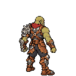
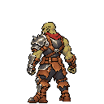

Concept 07 aprovado. Quatro vistas candidatas para produção: 128×128 RGBA, altura visível 100 px, chão y=126, paleta comum de 46 cores, sem armas. Primeiro: tamanho real; abaixo: ampliação 3×.
Avaliar rosto/corpo, orientação completa, assimetria do ombro/braço esquerdo, roupa frente/costas, escala e leitura. Aprovação artística pendente. Animações ainda não produzidas.


Concept 07 aprovado · Validação técnica · Fontes editáveis e receitas
Validação: 25 PASS, 0 FAIL; um aviso esperado porque o fallback e a direção front_r usam a mesma imagem. Não há revisão PlayMode.